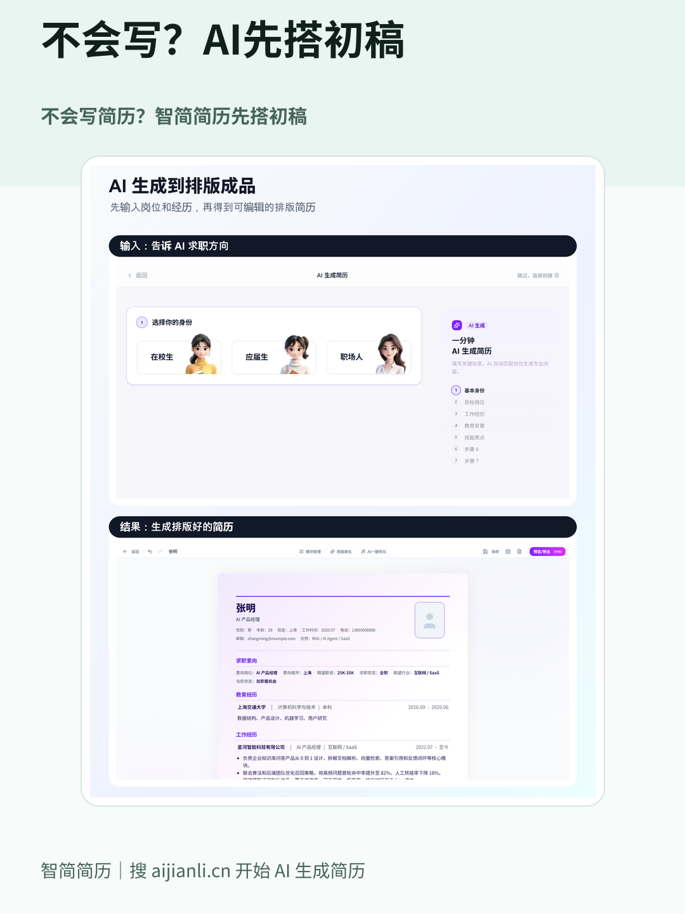
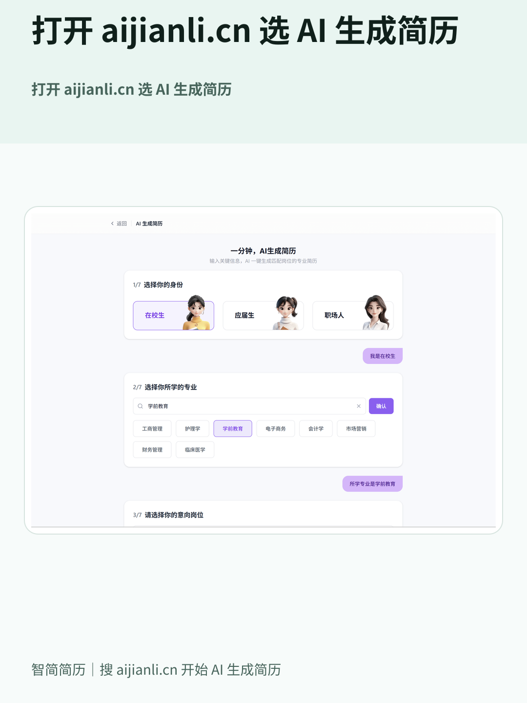
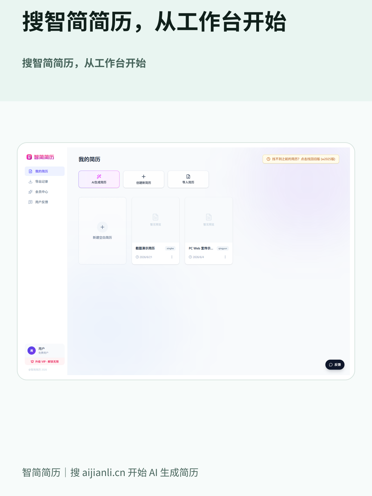
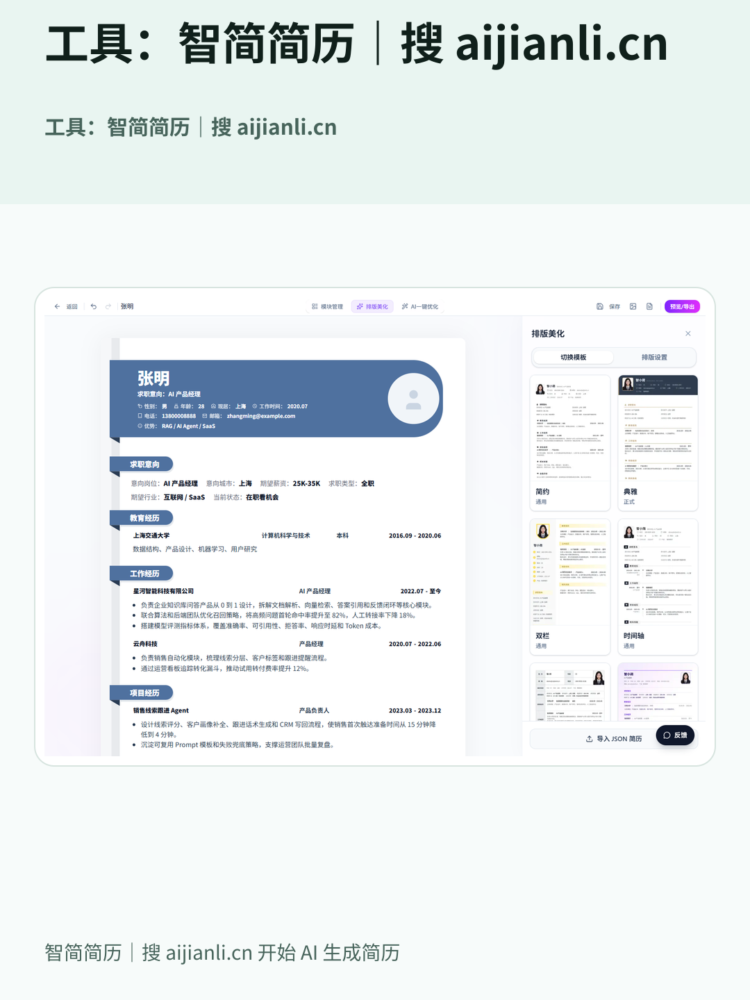

抖音图文发布清单
状态：ready_for_review
封面检查
封面标题：不会写简历？智简简历先搭初稿
- 首图标题要更短、更大，适合信息流快速扫过。
- 封面只讲一个核心收益，不堆功能点。
- 主体内容放在中间安全区，避免被界面元素遮挡。
尚未生成封面点击率候选。可运行 pnpm marketing:cover-strategy -- publish-task.json。
标题
正文
话题
#AI简历 #智简简历 #简历制作 #应届生简历 #求职 #简历初稿
图片顺序
这里是上传平台用的成品图，不是原始截图。
-

图 1：cover / 1080x1440
platform-images/01-cover-1080x1440.png -

图 2：entry / 1080x1440
platform-images/02-entry-1080x1440.png -

图 3：workbench / 1080x1440
platform-images/03-workbench-1080x1440.png -
 图 4：editor / 1080x1440
图 4：editor / 1080x1440
platform-images/04-editor-1080x1440.png -

图 5：cta / 1080x1440
platform-images/05-cta-1080x1440.png
配乐建议
方向：轻快、干净、有开始行动的感觉
节奏：中速或偏轻快，不要太燃，适合用户慢慢看 5 张图
搜索词：轻快 治愈 学习 效率 清爽
音量：建议 20%-35%，不要压过用户看图节奏
理由：这篇主题是从不会写到先有初稿，配乐要给人轻松开始、降低压力的感觉。
避免：
- 强节奏舞曲
- 伤感情歌
- 歌词信息太密的热门歌
- 和求职场景无关的搞笑音乐
配乐建议
方向：轻快、干净、有开始行动的感觉
节奏：中速或偏轻快，不要太燃，适合用户慢慢看 5 张图
搜索词：轻快 治愈 学习 效率 清爽
候选音乐名：Spring - Ikson A Little Story Komorebi Daylight Windy Hill 和煦的糖果风
音量：建议 20%-35%，不要压过用户看图节奏
理由：这篇主题是从不会写到先有初稿，配乐要给人轻松开始、降低压力的感觉。
避免：
- 强节奏舞曲
- 伤感情歌
- 歌词信息太密的热门歌
- 和求职场景无关的搞笑音乐
发布提醒
- 先上传图文图片，再选择配乐。
- 粘贴标题、正文和话题。
- 确认首图封面、滑动顺序、音乐音量和位置权限后再发布或定时。
发布后回填
发布成功后，把抖音图文链接粘贴到这里，复制命令后在项目终端执行。